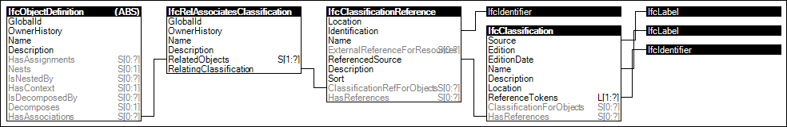

Link to this page
Link to this pageObjects, type objects, properties, and some resource schema entities can be further described by associating references to external sources of information. The source of information can be:
An individual item within the external source of information can be selected. It then applies the inherent meaning of the item to the object or property.
Figure 1 illustrates an instance diagram.
 |
Figure 1 — Classification |